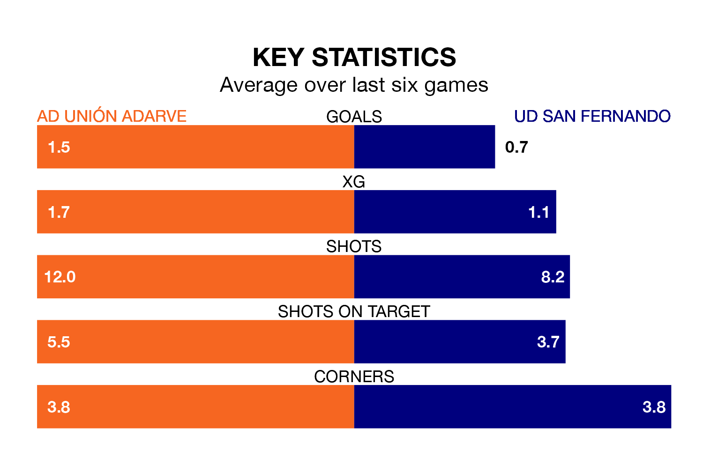

AD Unión Adarve host UD San Fernando on Sunday in Segunda División RFEF Group 5.
In their last league match, on January 21, Unión Adarve lost to Guadalajara 2-1 away.
San Fernando drew, 0-0 at home against SS Reyes.
With 14 goals in 19 games so far this season, San Fernando are the league's lowest scorers with 0.7 goals per game. And they are conceding more than average, letting in 24 goals at a rate of 1.3 per game.
Unión Adarve, meanwhile, are above average scorers, with 1.4 goals per game, compared to a league average of 1.1. They have conceded 1.5 goals per game.
The visitors are 15th in the table after 19 games, of which they have won five and drawn four, earning 19 points.
The home side are five places ahead of San Fernando in 10th, with six wins and eight draws putting them on 26 points.
Unión Adarve are in disappointing form in Segunda División RFEF Group 5, with one win and two draws from their last six games.
With three wins and a draw over that period, San Fernando's form is better – they have taken 10 points from 18, compared to Unión Adarve's five.
Updated: 09:07 (UTC), 24/01/24